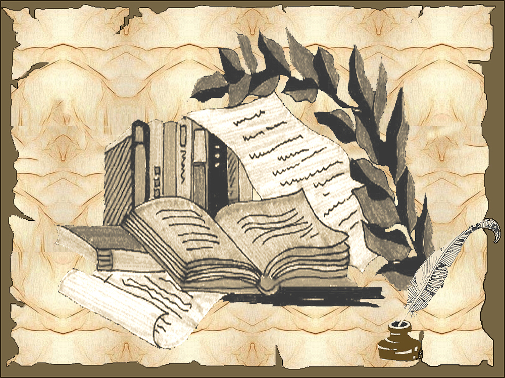
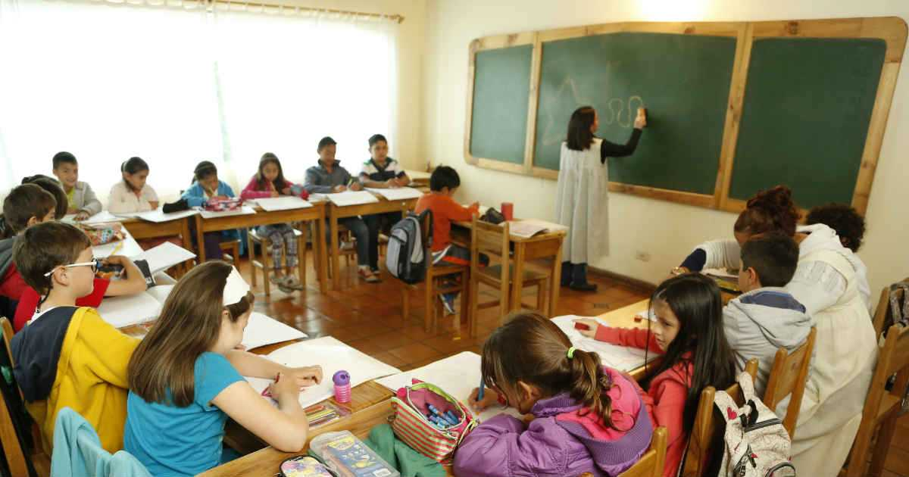
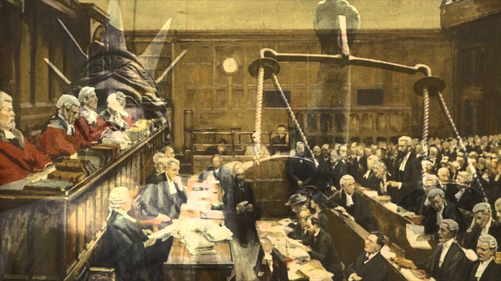
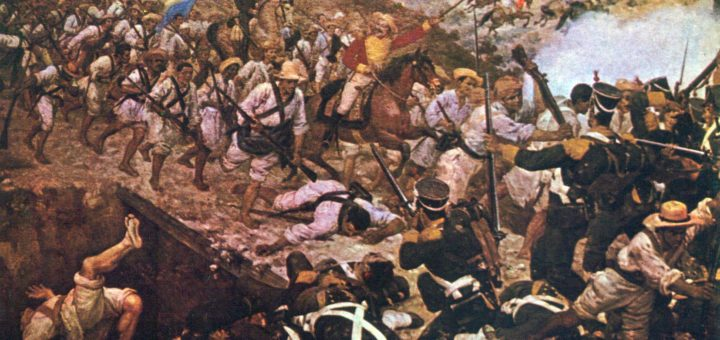

El aldeano vanidoso cree que su pequeño mundo es el universo entero. Siempre busca el poder local, mortificar a su rival, o acumular riquezas en su alcancía. Está satisfecho con ese orden universal limitado, sin percibir la presencia de gigantes con siete leguas en sus botas, ni de los combates celestiales de los cometas devorando mundos dormidos. Pero las aldeas de América deben despertar. Los tiempos exigen valentía y acción, como los varones de Juan de Castellanos, cuyas armas de juicio son superiores. Trincheras de ideas valen más que las de piedra. Ninguna proa puede atravesar nubes de pensamiento. Una idea enérgica flameada a tiempo puede detener incluso a un escuadrón de acorazados, como la bandera mística del juicio final. Los pueblos desconocidos deben conocerse rápido, como aliados en una lucha común. Los que rivalizan como hermanos celosos deben unirse en lugar de dividirse. Las deudas de honor no se saldan con dinero, sino con acciones justas. Si los ladrones devuelven las tierras usurpadas, se ganarán el respeto del pueblo. Las repúblicas americanas deben despertar. No pueden seguir siendo pueblos que viven en el aire, con sus copas de flores balanceándose al capricho de la luz o las tormentas. Deben alinearse como árboles para resistir al gigante de las siete leguas. Es la hora de un recuento y una marcha unida, como la plata en las raíces de los Andes. Los pueblos sietemesinos, aunque les falte valor, deben aprender a luchar. Aquellos que no tienen fe en su tierra son como hombres prematuros. Deben enfrentar sus desafíos y no negar a los demás lo que les falta. Deben reconocer que no hay orgullo más grande que el de las repúblicas americanas, levantadas entre masas de indígenas y apóstoles luchadores. Sin embargo, el problema radica en que los gobiernos deben surgir de la nación y adaptarse a sus elementos naturales. Las formas de gobierno deben surgir de la propia constitución de cada país. La América del Norte, aunque poderosa, debe conocer y respetar a las repúblicas hermanas. Las razas no son motivo de odio, ya que no existen razas separadas. No se debe promover el odio entre los pueblos. América debe unirse, conocerse y mostrar su valía. Las nuevas generaciones deben liderar con la creación y el conocimiento de su tierra. Las relaciones íntimas entre las naciones son esenciales para prevenir conflictos y fortalecer la paz. La América trabajadora está en camino, desde el norte hasta el sur. La semilla de la América nueva ha sido sembrada por héroes pasados. Es tiempo de unirse en un himno unánime, siguiendo el legado de los padres fundadores. La América nueva se levanta, regada por el Gran Zemí desde el río Bravo hasta Magallanes.